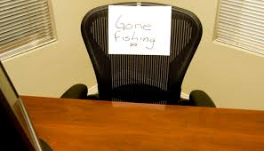

This is a unique project because it involved developing a Recruitment tracking system for the Organisation from scratch and tracking 3000 Applications.
We discovered through analysis and visualization that the Organization had a below average offer acceptance rate.
The recommendations we gave helped the Organization save up to 30% recruitment cost and increased the offer acceptance rate from 44% to 50%. This project was executed using SQL and Power BI tools.

This Organization which aimed at providing high-quality products and exceptional customer service to its diverse customer base contacted us
to analyze their sales and customers data, draw insights into their business performance, customer behavior and product trends in order to
identify key areas for improvement and strategic opportunities for business expansion.
.

This client wanted to expand their business by adding new product
lines. However, reached out to us to develop a product comparison dashboard to help the company take a
decision on its expansion plans.

This project was conducted for a giant Tech firm experiencing high level of employee attrition particularly among employeesin certain department. The focus of the project was to extract key insights from available data and provide recommendations on how to improve retention.

This Project delves into the vast pool of absenteeism data, aiming to unveil hidden trends, identify influencing factors, and explore the implications of employee absences on performance and overall workforce dynamics. I worked on this Project using Power BI to comprehensively examine key Metrics such as employee demographics, job roles, performance scores, and engagement levels to truly grasp the intricacies surrounding the rate of absenteeism, develop strategies that mitigate its impact and create a more engaged and productive workforce.